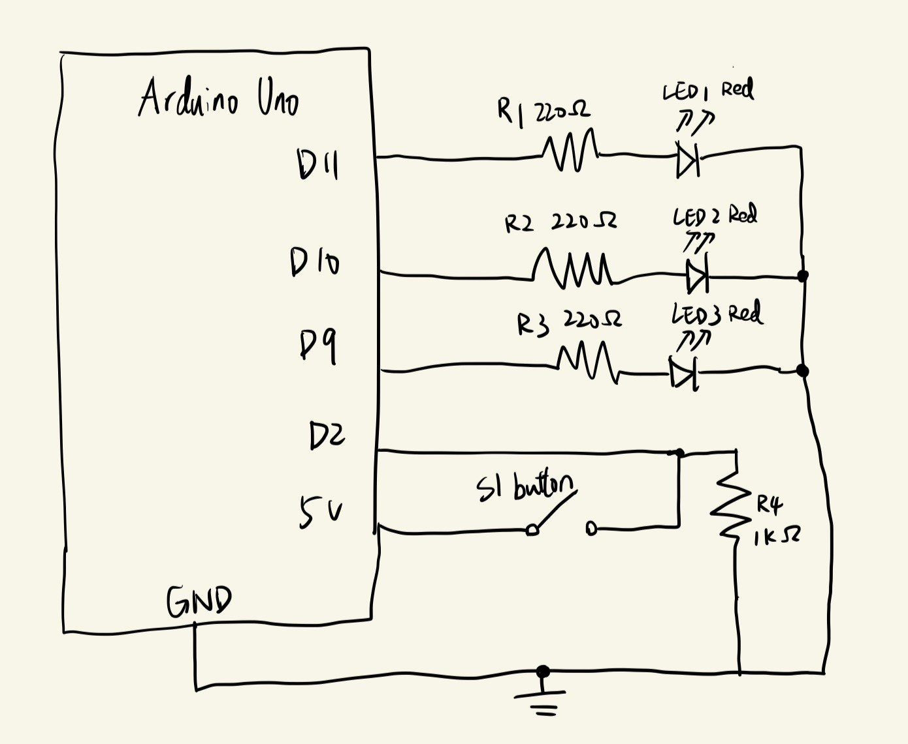
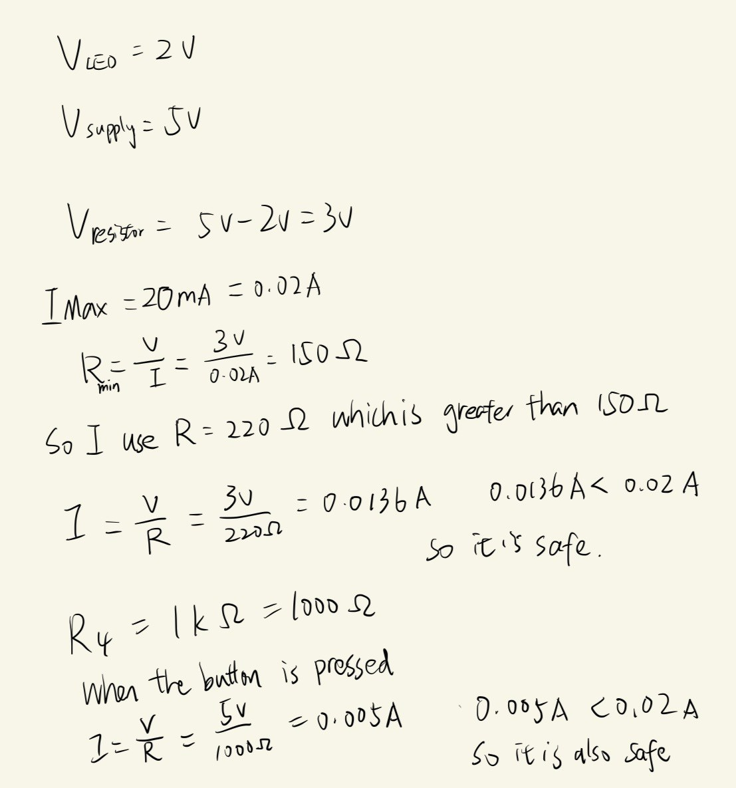
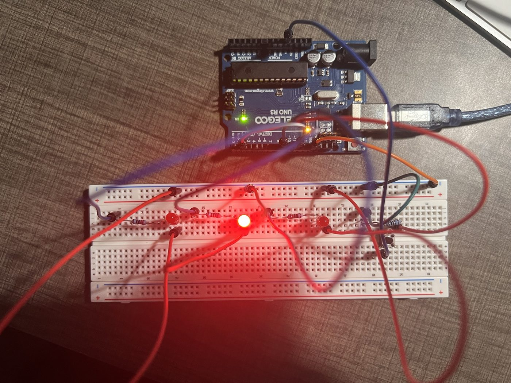
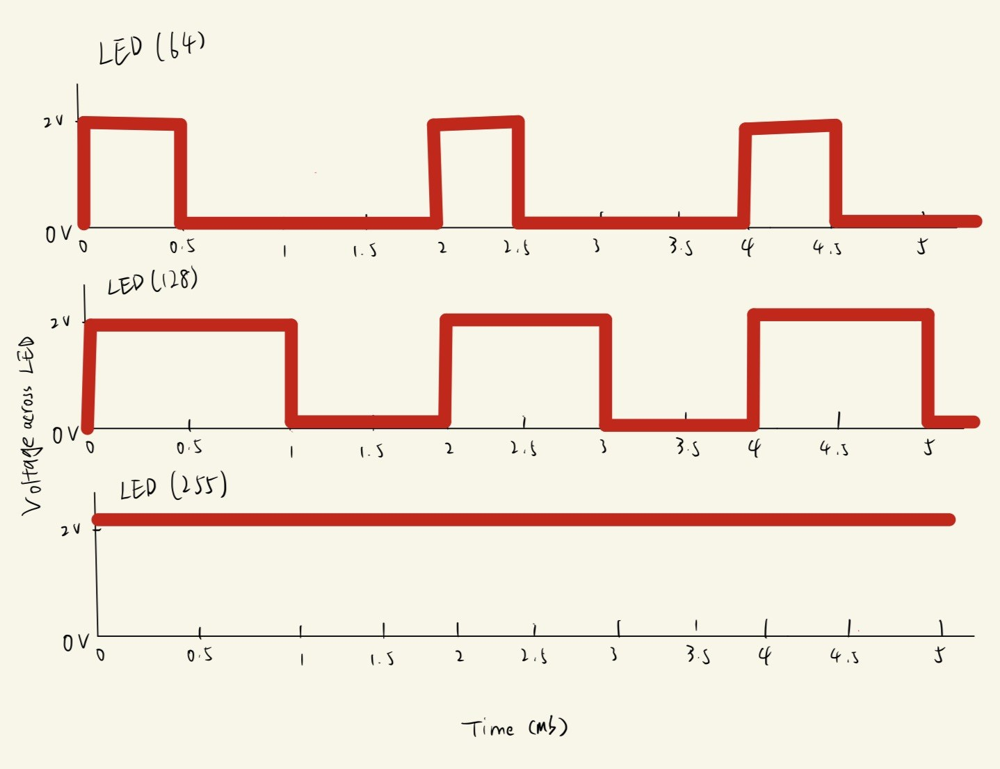

For this toy prototype, three red LEDs fade on one after another, like a light running from left to right. If you hold down the button, the light runs the other way, from right to left. Let go and it goes back to left to right.

analogWrite() can fade it. The
button S1 connects 5v to pin 2, and R4 (1kΩ) connects pin 2 to
ground.


// pin for LED 1
int led1 = 11;
// pin for LED 2
int led2 = 10;
// pin for LED 3
int led3 = 9;
// pin for the button
int button = 2;
// time for each brightness step in ms
int fade_delay = 4;
// first LED to light up
int first = led1;
// last LED to light up
int last = led3;
// runs once at the start
void setup() {
// set LED 1 pin as output
pinMode(led1, OUTPUT);
// set LED 2 pin as output
pinMode(led2, OUTPUT);
// set LED 3 pin as output
pinMode(led3, OUTPUT);
// set button pin as input
pinMode(button, INPUT);
}
// runs over and over
void loop() {
// button not pressed
if (digitalRead(button) == LOW) {
// start from LED 1
first = led1;
// end at LED 3
last = led3;
} else {
// button held: start from LED 3
first = led3;
// end at LED 1
last = led1;
}
// fade up the first LED
for (int b = 0; b <= 255; b = b + 5) {
// set brightness
analogWrite(first, b);
// wait
delay(fade_delay);
}
// first LED off
digitalWrite(first, LOW);
// fade up LED 2
for (int b = 0; b <= 255; b = b + 5) {
// set brightness
analogWrite(led2, b);
// wait
delay(fade_delay);
}
// LED 2 off
digitalWrite(led2, LOW);
// fade up the last LED
for (int b = 0; b <= 255; b = b + 5) {
// set brightness
analogWrite(last, b);
// wait
delay(fade_delay);
}
// last LED off
digitalWrite(last, LOW);
}
analogWrite() doesn't give a lower voltage. It turns
the pin on and off very fast (about 490 times per second on these
pins), and the number decides how much of the time it is on. 64 is
on about 25% of the time, 128 about 50%, and 255 is on all the time.
When it is on, the LED has about 2v across it.
Each LED draws about 13.6mA, so all three on at once is 3 x 13.6mA = 40.8mA. The button adds 5mA when it is pressed, so the most the circuit draws is about 46mA. That is below the Arduino's 200mA total limit, and each LED is also below the 20mA per-pin limit. With a 1200mAh battery, the circuit would run for about 1200mAh / 46mA is about 26 hours.
I measured 1.93v across one of my red LEDs while it was on. The typical forward voltage for a red LED is about 1.8v to 2.2v, so my measurement is within that range, and close to the 2v I used in my resistor calculation.
Yes, I used Claude. It helped me figure out how to wire the 4-leg button on the breadboard. It also helped me with the code and with building this web page, since I forgot some of my frontend skills. I also used it to help me check and refine the language.
Reflection: it was most helpful for the wiring, because it gave me a starting point.